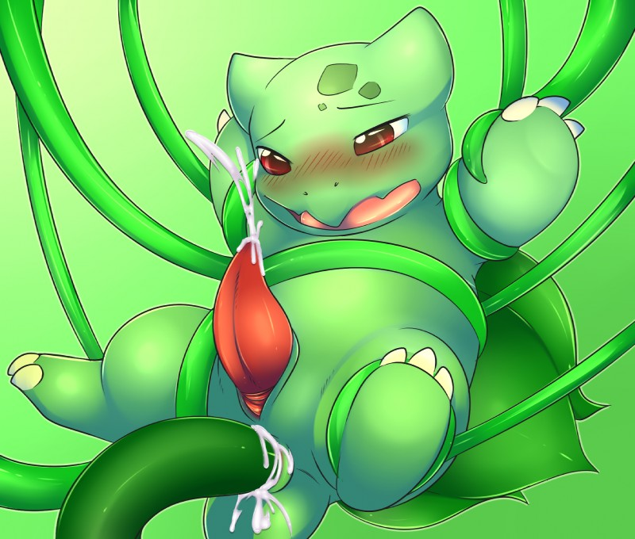
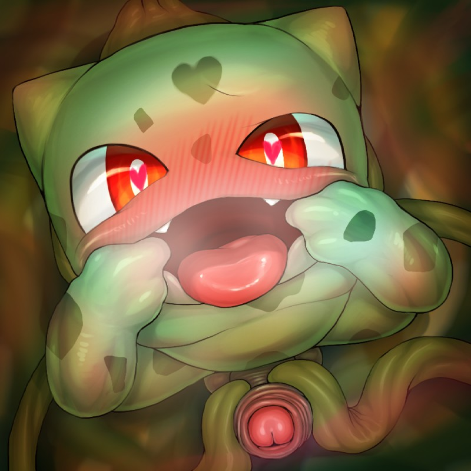
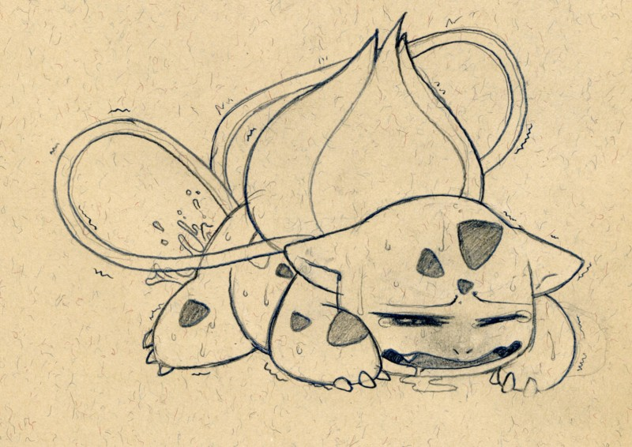
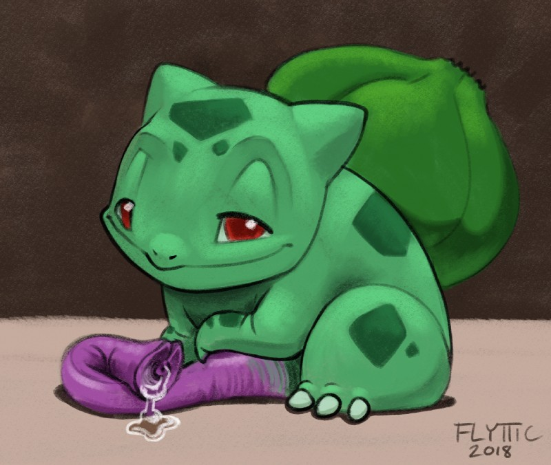

Bulbasaur - #001
a male bulbasaur's bulb on it's back produces a type of seed that will occasionally fire off a cloud of spores, which will travel through the air until it finds a female, impregnating them. however, it's noted that Bulbasaur has a penis anyway, and quite the large one sometimes.
| dex number: | 001 |
| e621 popularity: | 937 | dom/sub: | mostly dom |
| size: | 3 |
|  |  |  |  |
|---|---|---|---|
| camychan | syuro | tush | flyttic |
Bulbasaur e621